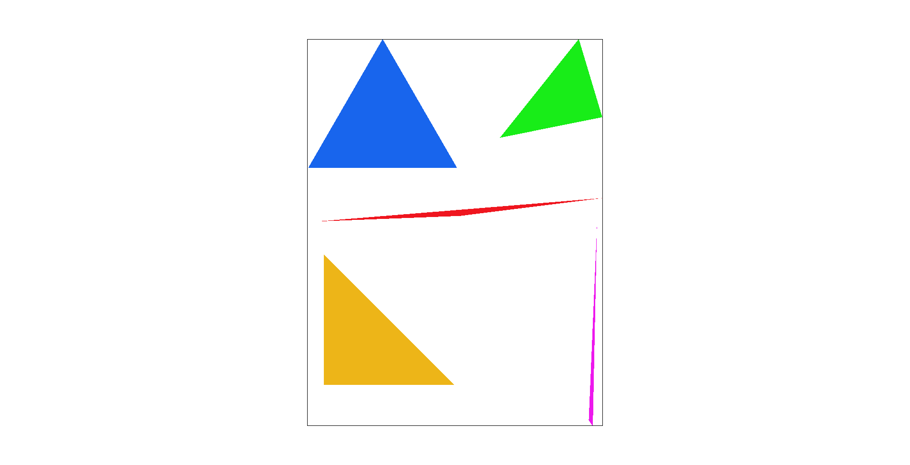
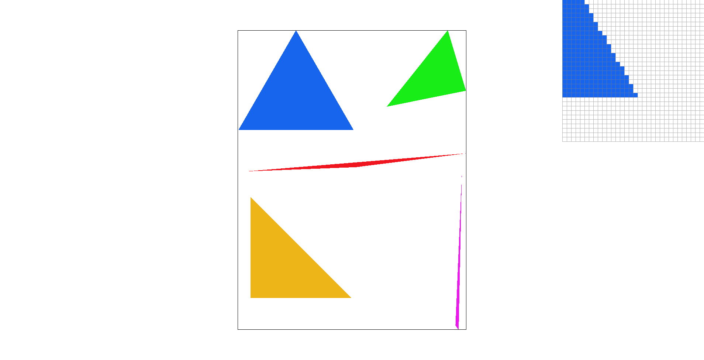
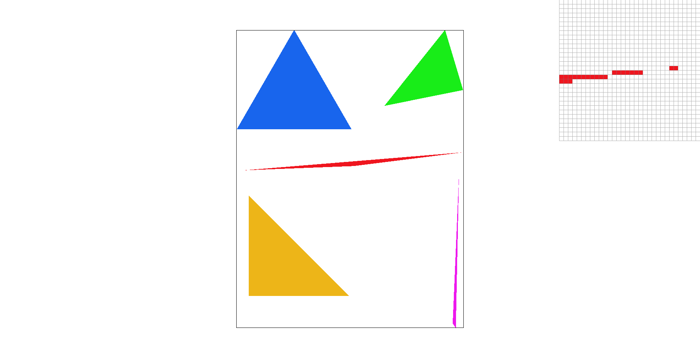
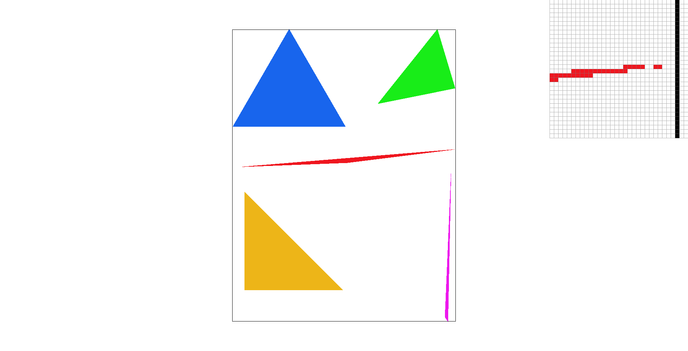
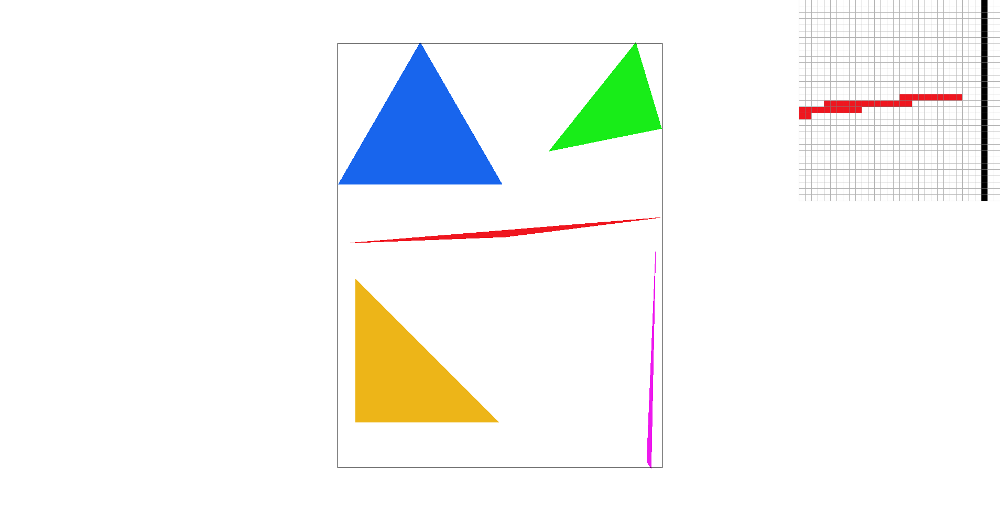

Given 3 points and a color, I am to color in pixels if they fall within the triangle formed by the 3 points. I rasterized the triangles by first finding the boundaries of the box. I found the smallest and largest of each x and y value. I needed to floor and ceil to account for decimal values as I wanted to loop and deal with integer pixels. When I filled in every point in the box it worked, but next I needed to calculate whether the point was in the triangle or not. We derived a formula for this during lecture so I basically implemented it into the code.
My algorithm is no worse than an algorithm that checks each sample within the bounding box of the triangle. It properly calculates the bounding box, and checks every single pixel in the box, because many of the triangles in it need to be assigned a color. It iterates through every integer pixel, and we use 0.5 as the buffer.
|

|

|
Supersampling involves taking sampling a box of shapes around our point, and then averaging the color/weight to assign it to our current point. We rasterize at a high resolution and then downscale it to a lower resolution. Supersampling reduces jaggies, and gives a better rasterization result. I took my code from Task 1 and made some modifications. First I had to account for a sample rate. Inside each original "box", I need to do more mini boxes, which is determined by the sample rate. This in turn affects all the formulas I previously used, such as the inside/outside formula. I also can't just fill in the box with a single color. I need to average out the colors sampled from the mini supersampled samples. And then assign that color to this pixel. We use the sample_buffer instead of the framebuffer, and need to assign memory size to it which depends on our sample rate. We also need to clear it after each draw and dynamically resize it. I also had to changes some of the smaller functions such as resolve_to_framebuffer. The result is much better rasterization and successful antialiasing.
The images below show the differences between the sample rates. The differences are observed because a higher sampling rate results in a smoother image and less sharp jaggies. The blank spots are replaced with blurrier colors for a better rasterization experience.
|
|

|
|

|

|
I made jacked Barney. I rotated the triangles that make up his biceps and turned his forearms up. Barney the dinosaur is jacked.
Pixel sampling is where you sample against a texture mapping to figure out what color to assign to a pixel. In the code, we are given a texture tex. If we sample this tex, we will know what to assign to our pixel. Nearest pixel sampling method is where you just pick the nearest texture and assign it to our pixel. This method is cheap but doesn't give the best results. The Bilinear method is a bit more complicated, where you average the 4 closest texture pixels and assign it to our pixel. This result is more expensive but allows for better visual results.
There will be the largest difference between the two methods when the image is complex and has many different colors. If you try to just use nearest pixel sampling, you will loose out on a lot of valuable data. But if you use bilinear filtering, then the minor intricacies of the image will be captured and better preserved.
Check out the svg files in the svg/texmap/ directory. Use the pixel inspector to find a good example of where bilinear sampling clearly defeats nearest sampling. Show and compare four png screenshots using nearest sampling at 1 sample per pixel, nearest sampling at 16 samples per pixel, bilinear sampling at 1 sample per pixel, and bilinear sampling at 16 samples per pixel.
I couldn't do the texture part but I got the shape to appear.Level sampling is where you have different versions of the same image but sampled at different rates. Depending on how big or detailed we need it, we can display the proper image. I implemented it by having different levels and picking the respective level.
Stronger pixel sampling methods such as bilinear instead of nearest decreases speed, increases needed memory, and improves antialiasing.
Higher level sampling decreases speed, increases the memory, and improves antialiasing.
More samples per pixel also decreases speed, increasing required memory, and improves antialiasting.